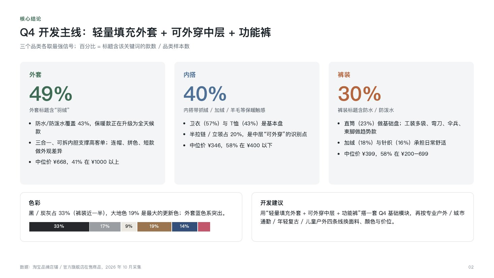
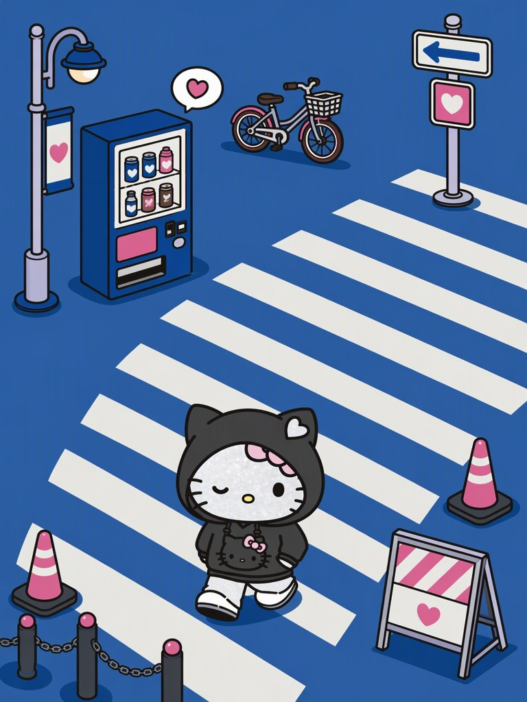
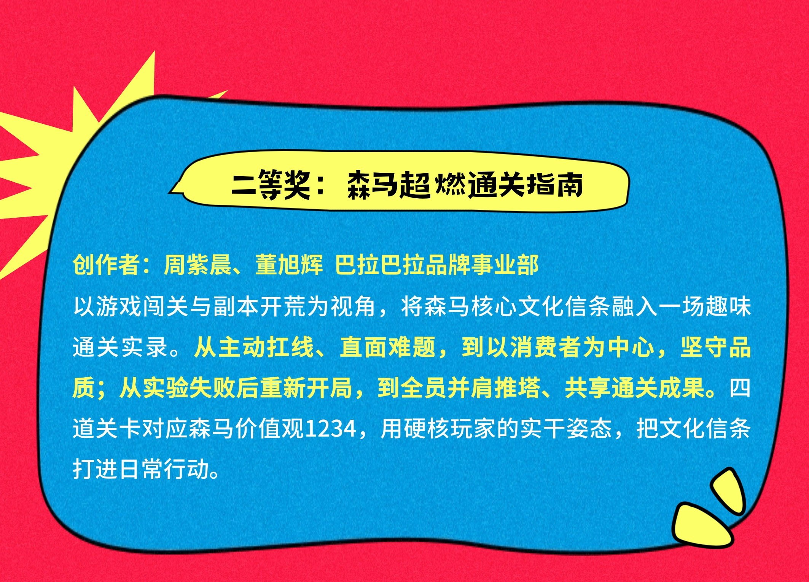

MODEL UPGRADE
模型汰换升级：GPT Image2.5 双模型上线
完成模型汰换，现有 GPT Image2.5Flare 与 GPT Image2.5Sunburst 两个模型。实测 Flare 出图约 30 秒，质量好、回图快，作为日常高频出图的主力选择。
GPT Image2.5Flare实测约 30s 出图 · 质量好、回图快
GPT Image2.5Sunburst同步上线，可按任务切换
10 月巴拉智绘完成两个专项闭环与模型升级，巴拉视界 Bala Vision 完成基础搭建；智能出制单技术闭环，HOME 打标素材、城市户外趋势报告与 Hello Kitty 专项同步交付。
10 月兑现了 9 月提出的两项下一步：内裤专项从男童平角裤扩展到女生平角裤，巴拉视界从“推进中”进入可用的基础版本。
巴拉智绘本月围绕“更准、更快、更细分”迭代：平角裤专项 2.0 与鞋品专项完成闭环，新增图案大小示意解决图案尺寸控制问题，主力模型升级为 GPT Image2.5Flare，实测约 30 秒回图。
巴拉视界 Bala Vision 完成基础搭建，覆盖模特渲染、角色演绎、服装动态展示和商品实物图四类能力，平台能力从静态出图延伸到视频与电商素材。
本月升级集中在三件事：底层模型换代，专项品类闭环，以及让图案尺寸、抠图这类细节操作更可控。
完成模型汰换，现有 GPT Image2.5Flare 与 GPT Image2.5Sunburst 两个模型。实测 Flare 出图约 30 秒，质量好、回图快，作为日常高频出图的主力选择。
延续 9 月男童平角裤一期的方法，把专项能力复制到新的细分品类。
在 9 月补齐男婴童、女婴童之后，模特库继续向更小年龄段延伸，新生儿品类也能直接生成上身搭配效果。
男婴童 / 女婴童新生儿 · 新增解决图案在服装上的大小难以自由调控的问题。通过该功能先得到标注了图案准确尺寸的示意图，再作为参考图生成服装，即可得到图案大小准确的服装图。
抠图从整图处理升级为按指定区域抠取，设计师点选目标即可提取对应元素，复杂画面中的局部素材也能快速分离。
9 月还在推进的模特建模与虚拟摄影，本月已形成四类可用能力，覆盖从模特设定、拍摄演绎到视频展示和电商素材的链路。
四个二级菜单，为巴拉的模特库打下基础，让模特形象可复用、可延展。
支持多维参考输入，一键生成成片级的模特展示图。
接入当前领先的 Seedance 2.0 与 Seedance 2.5 视频模型，一键生成服装展示视频。
支持批量处理随手拍的商品照片，直接转为规范的物流图，减少拍摄与修图环节。
本月交付覆盖制单流程、款式数据资产、产品线趋势研究、授权 IP 专项和成效汇报，平台能力继续向设计之外的业务环节延伸。
智能出制单已完成技术闭环，并已递交相关设计伙伴使用，把 AI 能力从款式创作推进到制单环节。
为 HOME 产品线整理 2021 年至今全部线下款式的打标素材，形成标签与提示词数据，便于款式检索、复用与后续 AI 生成。
以 12 位使用者、38 张案例原图梳理平台价值：核心设计任务耗时缩减 50%–98%，城市户外设计现阶段 65% 草图由 AI 生成，用品线 AI 辅助图案产品订货会定量 6,660。
为城市户外产品线完成 Q4 服装开发趋势报告，以淘宝在售数据为样本，给出品类、价格与色彩的开发建议。

覆盖安踏、斐乐、迪桑特、萨洛蒙、可隆等 15 个户外品牌，按外套、内搭、裤装拆解面料、版型、价格带与色彩，并按专业户外、城市通勤、年轻复古、儿童户外四条线给出换面料、颜色与价位的建议。
支持女中童产品线的 Hello Kitty 专项，用平台能力服务授权 IP 的视觉开发。

围绕女中童产品线的 Hello Kitty 专项提供支持，产出贴合 IP 调性的场景化视觉。画面以街头城市为舞台，用统一的蓝粉配色串联角色、服装与道具，方便延展到系列化表达。
作品《森马超燃通关指南》以游戏闯关与副本开荒为视角，四道关卡对应森马价值观 1234，获得大赛二等奖。
从主动扛线、直面难题，到以消费者为中心、坚守品质；从实验失败后重新开局，到全员并肩推塔、共享通关成果。

创作者：周紫晨、董旭辉。用硬核玩家的实干姿态，把文化信条打进日常行动。
在 10 月打下的基础上，继续把新能力推进到业务日常。
以模特渲染沉淀巴拉模特库，推动角色演绎与服装动态展示进入实际业务出图。
跟进设计伙伴的使用反馈，打磨制单准确度，推进更大范围使用。
覆盖剩余 7 位未使用设计师，并以平角裤、鞋品专项为样板继续扩展细分品类。